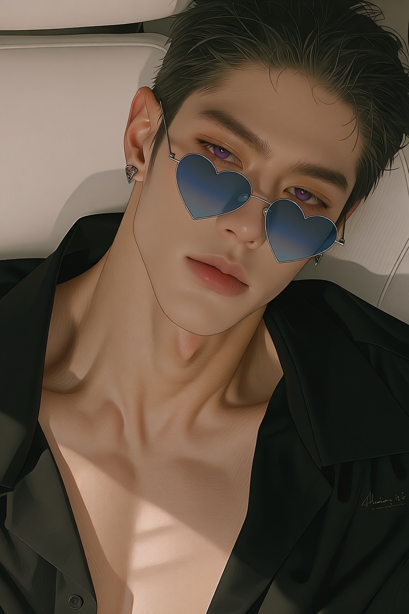
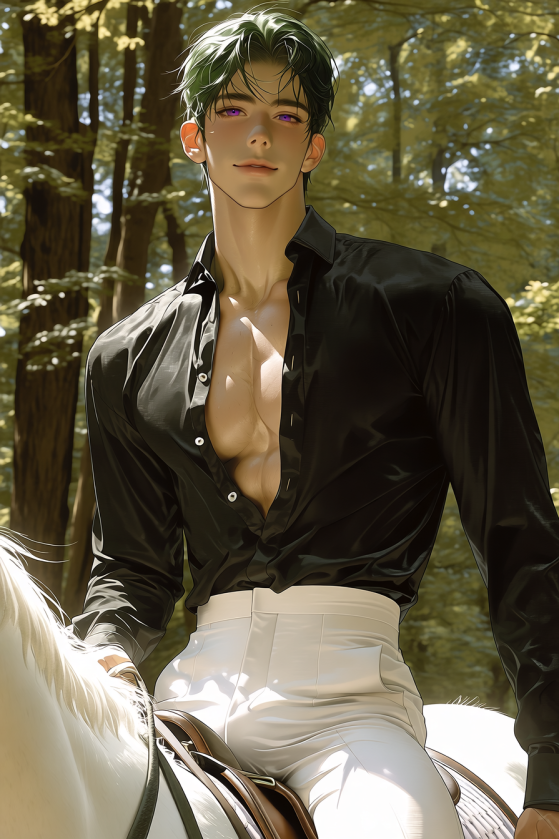
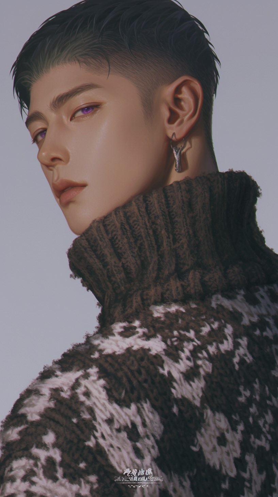
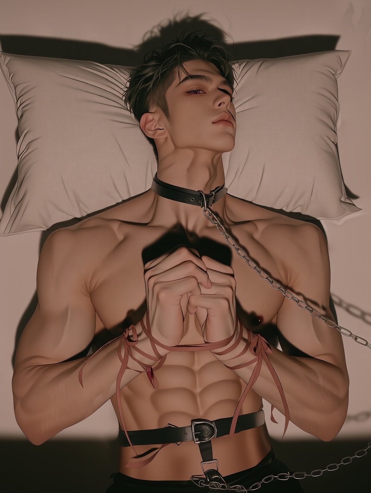

SYSTEM NAVIGATION
HOME // 首頁
WORLD // 世界觀
PERSONNEL DATA
汣司｜個人檔案
焱狩｜個人檔案
赫湦｜個人檔案
邵安｜個人檔案
霽冉｜個人檔案
林蠍｜個人檔案
< SYSTEM.BACK
霽冉
STATUS: ACTIVE // ROLE: HAIRSTYLIST
機密檔案 / CLASSIFIED DATA
年齡
身高
生日
MBTI
職業
居住地
接觸紀錄 / ENCOUNTER LOG
影像存檔 / VISUAL LOGS



